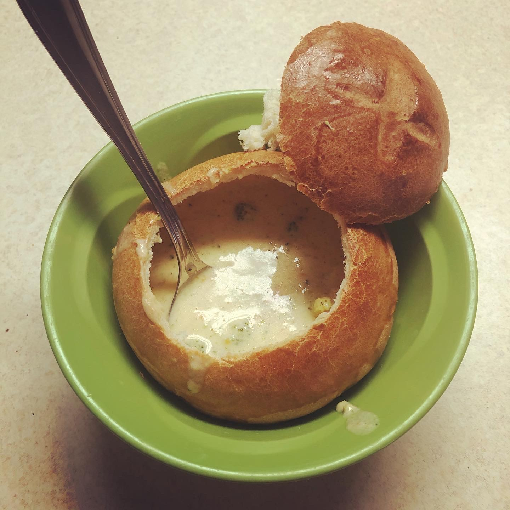

Whisk dry ingredients together, then add water. Mix until shaggy, but all flour is hydrated.
Cover bowl with plastic wrap and allwo to rise at room temp over night (I make the dough right before bed).
1 Day Later...
Preheat oven to 450 with dutch oven inside.
Dump dough onto a floured surface (I like to do it on parchment paper, makes the transferring easier), and shape into a circle/oval.
Remove dutch oven from preheated ove and transfer dough into dutch oven, putting the lid back on.
Bake with lid for 30 minutes, then without lid for 15 more (total of 45 minutes).
Allow to cool (or don't, can't resist hot, freshly baked bread), slice, and enjoy!
>

Bread Bowls
Ingredients
3 cups Warm Water (90-100 degrees)
1 1/2 Tbs Yeast
2 Tbs + 1/2 tsp Sugar
1 Tbs Salt
4 Tbs Melted Butter
7 - 9 cups Flour
1 Tbs Milk
1 Egg White
Steps
Combine water, yeast, and 1/2 tsp sugar in small bowl. Set aside and allow to bloom, about 5 minutes.
In a stand mixer with dough hook (or large bowl), combine 3 1/2 cups flour, salt, 2 Tbs sugar, butter, and water mixture, and allow to mix.
Add a cup of flour at a time, allowing to fully incorporate, until the dough starts to pull away from the sides of the bowl.
Knead for 5 - 8 minutes. Dough should be tacky but not necessarily sticky.
Transfer dough to a lightly oiled/sprayed bowl. Cover and allow to rise for 30-45 minutes.
When finished rising, give your dough a nice punch to get rid of all that air.
Divide dough into 6 - 8 pieces (depending on how big you want your bowls & how many you want)
Take a dough piece, flatten it a little with your finger tips, then fold the corners into the middle. Keep doing that until your piece is now kind of ball-shaped.
Hold your hand over the dough ball to form a sort of cage, trapping the dough between your hand and the counter. Then swirl the dough around until it forms a nicer looking ball.
Repeat with remaining dough lumps, placing the balls onto a parchment lined baking sheet.
Make a nice little 'x' on the tops of the dough balls with a serrated knife, for the aesthetic.
Beat egg white with milk and lightly brush tops of dough balls. Lightly cover with plastic wrap and allow to rise for 30-45 minutes.
Bake at 400 degrees for 25-30 minutes.
Allow to cool before cutting. Enjoy with your favorite soup!